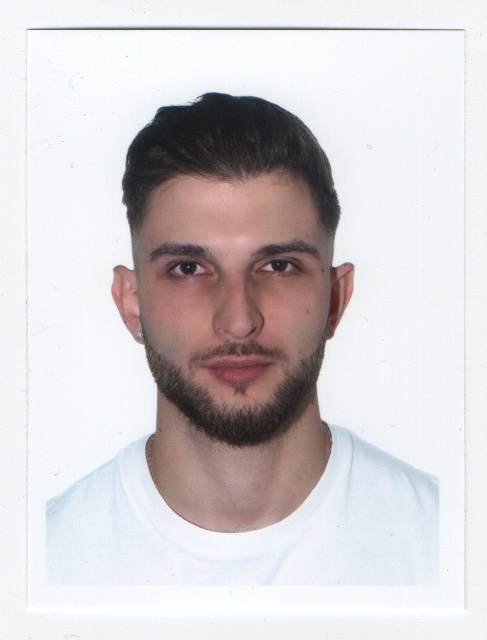

Hola, soy Rumen Orachev
Desarrollador de Aplicaciones Multiplataforma



Desarrollador de Aplicaciones Multiplataforma
Programación
Desarrollo
Ciberseguridad
AWS
Redes
Proyectos
Soy Rumen Orachev, apasionado del desarrollo de software y la tecnología.
Actualmente estoy cursando un Grado Superior en Desarrollo de Aplicaciones Multiplataforma, al tiempo que amplio mis conocimientos con un curso de Desarrollo de Aplicaciones con Tecnologías Web.
Además, cuento con experiencia laboral en entornos digitales y de desarrollo, lo que me ha permitido aplicar y reforzar mis conocimientos en situaciones reales.


Además, tengo certificaciones que demuestran mi compromiso continuo con el aprendizaje en ciberseguridad, computación en la nube y redes.
AWS

Cisco

Cisco

Durante el mes de prácticas en la empresa ECOMPUTER, trabajé con frameworks como Vue 3 y Laravel, y profundicé mis conocimientos en desarrollo web utilizando HTML, CSS, JavaScript y PHP.
Durante 6 años y medio adquirí experiencia con sistemas digitales y resolución de incidencias en un entorno exigente, lo que despertó mi interés por la tecnología y me motivó a formarme profesionalmente en este ámbito.
Además de este sitio web, también estoy trabajando en otros proyectos. Aquí hay algunos de ellos:
Proyecto centrado en la evaluación de las respuestas generadas por modelos de lenguaje. El objetivo es detectar cuándo una IA responde de forma inadecuada o poco fiable, promoviendo el desarrollo de soluciones que mejoren la precisión y fiabilidad de la inteligencia artificial.
Estoy trabajando en un blog sobre café dividido en tres secciones: Inicio, Cursos y Contacto. Estoy diseñando y desarrollando la web desde cero, prestando atención tanto al diseño como a la funcionalidad.

Próximamente disponibles en mi cuenta de GitHub.
Iniciativa personal orientada a facilitar el estudio a los alumnos del Grado Superior en Desarrollo de Aplicaciones Multiplataforma. He creado más de ocho cuestionarios públicos, con contenidos enfocados en los módulos del ciclo.
.png)
Acceso a los cuestionarios a través de mi perfil verificado de Kahoot.